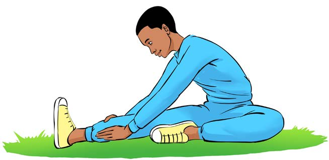
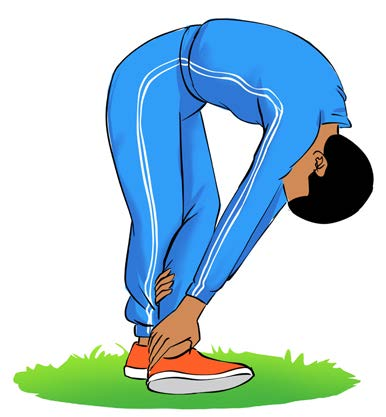

Figure 4: A pupil stretching the back of the thighs
4.
Stretching calf muscles:
(a)
Stand upright and cross your legs;
(b)
Bend forward pressing your back leg heel into the ground, as shown in Figure 5;
(c)
Hold your front leg;
(d)
Hold it for 10 to 15 seconds; and
(e)
Change the leg and repeat the same steps.

Figure 5: A pupil stretching the calf muscles
5.
Stretching the waist:
(a)
Stand upright and put your hands on your waist;
(b)
Slowly rotate your waist from right to the left and vice versa, as shown in Figure 6; and
(c)
Continue for 10 to 15 seconds.
FOR ONLINE READING ONLY